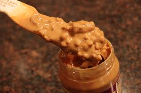
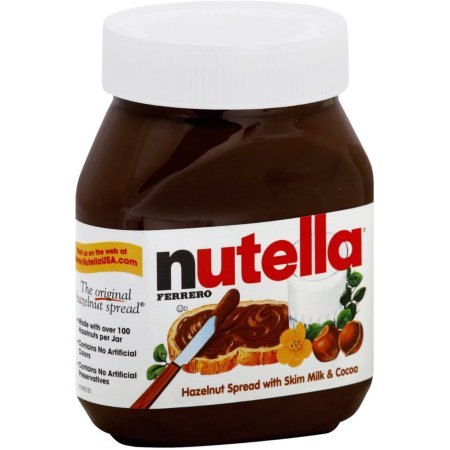

How to make this delicious sandwhich! |
|---|
Step-1-Slice your bread to desired thickness. If bread is already cut, take two slices and get ready for step-2.
Step-2-Spread desired amount of Peanut Butter on one side of the bread with knife. Step-3-Spread desired amount of nutella on the other piece of bread with knife. Step-4-Cut the banana, with knife, into thing slices and layer on one side of sandwhich.
Step-5- Put honey on sandwhich and then put two slices of bread together.
|